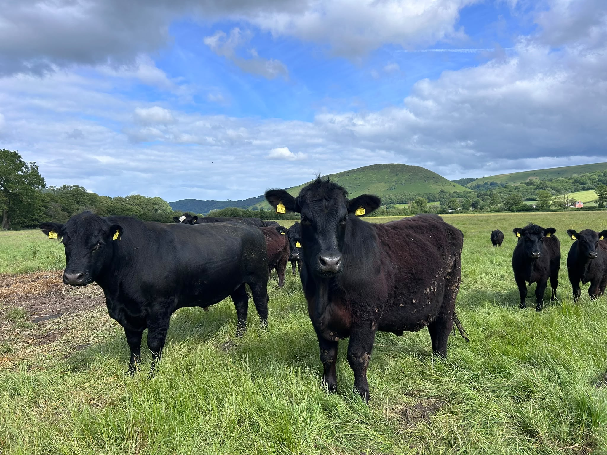

Evidence-based Agroecology.
Science from the soil up.
We investigate how agricultural amendments, including the compounds plants naturally produce, shape the biology in the soil and whether we can put those effects to work in the field.
Follow the chain. Find the mechanism. Test it in the field.
From laboratory to field
Borderbio is based on a working mixed farm on the England–Wales border, combining practical agricultural experience with analytical chemistry, molecular biology and controlled field trials.

Have you got something interesting?
Let's test it.
From plant extracts and biological products to fertilisers, soil conditioners and other amendments, Borderbio can investigate what happens after a treatment is applied — how soil biology responds, whether nutrient availability changes, and ultimately whether the crop benefits.
WORK WITH BORDERBIO →